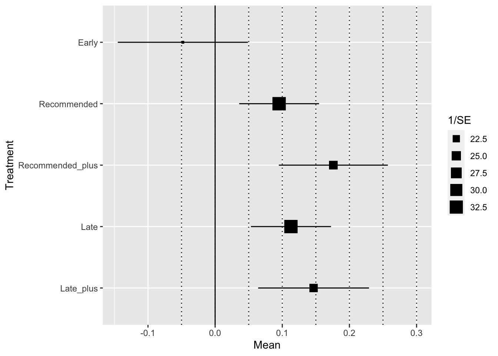
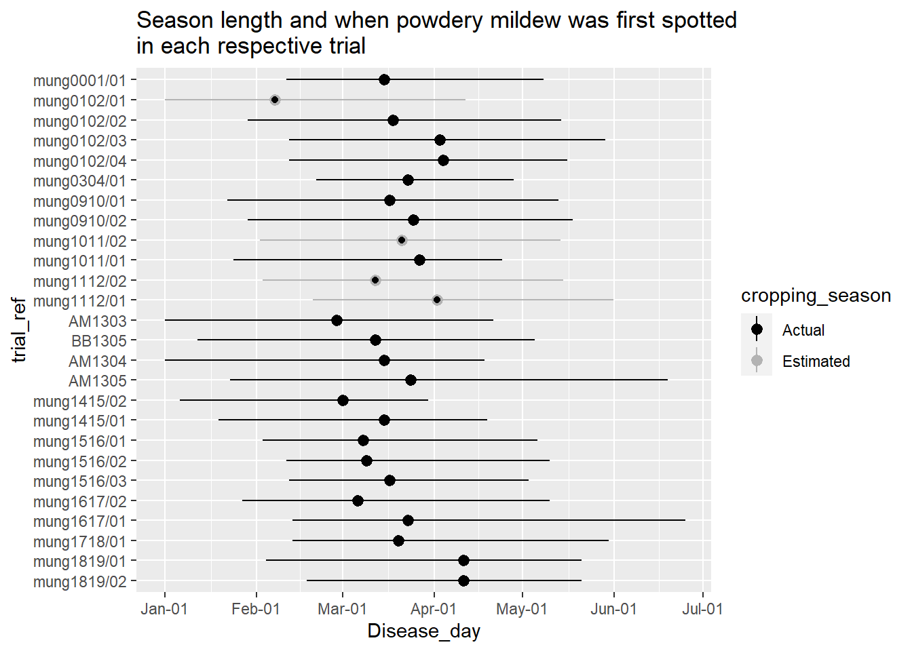

8 Manuscript
8.1 Introduction
Mungbean [Vigna radiata (L.) Wilczek] is a pulse crop primarily grown in south-east Asia for human consumption as an affordable source of protein (Pulse Australia n.d.). The bean pod or grain can be consumed raw or added to meals after sprouting. The dried grain can also be ground into a protein enriched flour for uses such as noodles, biscuits and cakes (Chankaew et al. 2013).
Mungbean was first brought to Australia in the 1930s for use as a forage or green manure crop and it was only as recent as the 1960s until that mungbean was grown commercially (association n.d., @Chauhan2018). At the end of the 1980s between 3 - 10 thousand hectares were being harvested for dried beans, of which mungbean is categorised by the FAO statistics data repository (Food and Agriculture Organization of the United Nations. 2020). In the decade leading up to 2018 between 35 - 86.4 thousand hectares of dried beans were planted annually. This increase is attributed high value export markets and to the improved yields in the new cultivars (Clarry 2016). Currently mungbean is predominantly grown in southern Queensland and northern New South Wales as a short season summer legume crop. In 2019, approximately 90 % of Australian mungbean was grown for export with lucrative returns of up to $1300 AU a tonne (Queensland Government 2019). Mungbean potentially yields up to 3 tonnes per hectare (Thomas et al. 2004), but due to high variability in yields between seasons and locations, the average Australian farm still yields less than 1 tonne per hectare (Chauhan and Williams 2018).
The high variability in yields, in part, can be attributed to a range of diseases that affect the crop (Kelly et al. 2017). Two major foliar diseases, tan spot or common wilt (Curtobacterium flaccumfaciens pv. flaccumfaciens) and halo blight (Pseudomonas savastanoi pv. phaseolicola), are the main focus of the Australian Mungbean Improvement programme’s resistance breeding efforts due to lack of effective chemical controls for them. While a third disease, powdery mildew, can reduce yields by up to 40% (Chankaew et al. 2013) in susceptible cultivars, the damage can be mitigated through an integrated disease management strategy of fungicide treatments and cultural practices.
Powdery mildew is caused by two separate genera of fungi in Australia Podosphaera xanthii and an unnamed Psuedoidium sp. (Kiss and Kelly Personal Communication). While the pathogens are obligate parasites, secondary hosts that allow the pathogens to over-season between mungbean crops have not yet been identified. The disease lifecycle can be as short as five days for a germinating conidia to infect the host and produce new reproductive structures, conidiophores, which produce more conidia which disseminate to new infection sites (Sparks and Kelly 2017). Weather conditions that favour the rapid development of the disease are cool temperatures between 22° and 26°C, and a leaf surface that is not overly wet for infection (Kelly et al. 2017).
Due to the requirement for cooler temperatures for infection, planting date is an effective strategy for preventing the development of powdery mildew in mungbean (“Planting mungbeans” n.d.). In southern Queensland and northern New South Wales, sowing dates between late spring (November) and mid-summer (January) are advised to avoid the conducive cooler autumn temperatures, which normally commence in March. Therefore, a delayed sowing date of late January into February increases the possibility powdery mildew will infect earlier in the crop development cycle and cause greater yield losses than in earlier sown mungbean crops.
Cultivar selection is an additional strategy to mitigate yield damage from powdery mildew. In Australia, quantitative resistance to powdery mildew has also been incorporated into few commercially available varieties. Jade-AU has the the best disease resistance to powdery mildew (moderately susceptible), with cv. Green Diamond also containing some notable resistance (Sparks and Kelly 2017). However commercially available mungbean cultivars in Australia lack sufficient resistance to be used as the primary powdery mildew management strategy. Evidence of this is shown by the 2016 field trials with the moderately susceptible cultivar, Jade-AU, where yield losses of up to 32.7 % were recorded (Sue Thompson 2016). Quantitative disease resistance has been observed in some breeding lines overseas (Pandey et al. 2018; Chankaew et al. 2013), however no evidence for how they compare to Australian varietal resistance could be found. Additional strategies to cultivar choice, such as fungicide treatments, are necessary to limit yield loss when conditions for the disease are conducive.
There is almost a complete lack of peer-reviewed literature summarising fungicide efficacy on powdery mildew in Australian mungbean. Much of the experimental work has been published by funding agencies and state government extension departments as extension bulletins or other related type materials. Past field trials in eastern Australia have tested a range of fungicide active ingredients while also attempting to evaluate the best application time for the highest efficacy (alliance 2013a, 2013d, 2013c, 2013b; Sue Thompson 2016; Kelly et al. 2017; Thompson et al. 2016). Early trials showed that for fungicide applications to protect yield, a single fungicide application at first sign of the disease with another follow-up application two weeks later, if necessary, was the most effective (Sue Thompson 2016; Sparks and Kelly 2017). However due to the variability in the results between seasons and experiments few of these studies produced a clear result based on a statistical analysis. This variability presents uncertainty for the best practice of fungicide spray schedules to mitigate yield losses from powdery mildew.
.
The collection of experiments mentioned above and other unpublished trials present an excellent opportunity for a meta-analysis. Meta-analyses are statistical tools which can analyse a collection of experiments, which have a similar aim, and produces a more accurate estimate of the true effect being measured. Using a meta-analysis can be useful in situations like this where several studies exist, that have the same objective but may not provide a clear answer to the question due to variation in the results within the individual studies. The outcome of a meta-analysis provides a more accurate estimation of the true treatments effect, because it considers the amount of variance in each study and weights the influence of each studies treatment effects according to it’s statistical accuracy. Typically meta-analyses consider the effect of a single treatment against a control group across multiple independent studies (Madden and Paul 2011). However meta-analyses can also consider effect differences between multiple treatments and a control group, these are called multi-variate or network meta-analyses (Madden, Piepho, and Paul 2016). Multi-variate meta-analyses are particularly useful when there are no direct comparisons between two treatments in any of the included studies. In-direct comparisons can be made between these two treatments if the both had direct comparisons with one or more treatments in common, assuming no significant bias in the studies which investigated each of the treatments which are subject to a indirect comparison (Jansen et al. 2011).
Considering the recent launch in 2019 of the decision support system (DSS) PowderyMildewMDM (Diggle n.d.), which provides a cost benefit analysis to assists growers in their decision ‘if’ and ‘when’ apply fungicide; a meta-analysis to evaluate and verify the best fungicide spray schedule seemed prudent. The aim of this meta-analysis was to determine, from a collection of unpublished studies, what spray management scenario provides the greatest yield protection from powdery mildew in Australian mungbean.
8.2 Materials and Methods
The data for this study were obtained from through personal correspondence with colleagues and collaborating institutions. The majority of the trials were undertaken by Professor Malcolm Riley and Dr Sue Thompson with the Queensland Department of Agriculture, Fisheries and Forestry (DAF). Trials undertaken in the 2013 season were conducted by the Northern Growers Alliance (NGA) (alliance 2013a, 2013d, 2013c, 2013b). The most recent trials starting from 2015 were undertaken by the University of Southern Queensland (USQ) with the assistance of Queensland DAF from 2015 to 2019. Trial data were in different formats with varying levels of information. Some trial data reported means of each treatment, with all but one study reporting some form of variance along with the mean.
Twenty six trials in total were collated.
Details of trial data are presented within a research compendium which was prepared to supplement this publication []. The criteria for inclusion of trial data in the meta-analysis required, a field trial testing fungicide efficacy for powdery mildew control on mungbean in the Grains Research and Development (GRDC) northern grains regions of eastern Australia, which grows the majority of Australia’s summer crops. Trial data had to include: the date when powdery mildew was first observed; disease incidence at the end of the growing season; fungicide application dates; the fungicide active ingredients; fungicide dose; and crop yield. The data were subset to only include treatments with the same mode of action; demethylase inhibitor (DMI) fungicides, tebuconazole and propiconazole were thus retained in the dataset. Subsequently the 26 trials were reduced to 16 using the same fungicide doses (Table 1). With only a small number of trials, and to increase the replication, we made no distinction between the tebuconazole and propiconazole in the analysis.
All trials included in this analysis were randomised complete block designs and not previously published in peer-reviewed literature.
While the main aim of all the trials collected for this study were to assess the efficacy of fungicide for control of powdery mildew, some trials tested additional variables in the experimental design.
These additional variables included: row spacing, fungicide active ingredient, fungicide dose, planting date, number of fungicide applications and cultivar. To account for the variation attributed to some of these variables between trials, and the treatments within trials, a single ‘trial’ factor was created to describe the main variables; a trial reference code, trial location, trial season, host genotype, row spacing, and fungicide dose. Most of the studies which were used in this analysis assessed powdery mildew incidence on a 1 – 9 ordinal scale (Table 2). However, the 2013 NGA trials (Table 1) reported incidence as the percentage of leaves covered by powdery mildew and the location of the infected leaves in the canopy; lower, middle or upper canopy.
Given the ordinal scale ranked plants on the percent of foliage up the plant showing the disease, a conversion to mean plot incidence on the ordinal 1 – 9 scale was straight-forward.
The timing of fungicide application treatments, was defined in relation to the recorded date when powdery mildew first occurred in the trial. An ‘Early’ fungicide application treatment, referred to a fungicide spray schedule that commenced the first spray prior to the disease being observed in the trial. ‘Recommended’ refers to a fungicide spray schedule which commences following the first sign of disease, within three days. ‘Late’ treatments commence between 7 - 13 days after the first sign of disease. The number of fungicide applications were binned in to two categories. A spray schedule with a single spray, and a spray schedule with two or three spray applications (Plus). The division of the treatments categorised: 13 ‘Early’ treatments; 5 ‘EarlyPlus’, 32 ‘Recommended’; 46 ‘RecommendedPlus’; 17 ‘Late’; and 20 ‘LatePlus. ’EarlyPlus’ treatments were removed from the subsequent meta-analysis, due to an insufficient sample size.
What remained was the mean yield for total of 173 treatments in the following five spray schedule categories: no spray control, single early spray, single recommended spray, recommended with multiple sprays, single late spray, and late with multiple sprays.
A categorical disease pressure factor was created by binning trials based on the mean AUDPC of the no spray control plot into two levels: ‘low disease pressure’ or ‘high disease pressure’. The two levels were separated via the median AUDPC (153.625) of the no spray control plots.
Mean grain yields for each treatment were either obtained directly from trial reports, or calculated from the raw data when available. The sample variance was calculated from the raw data when available or the least squares statistic in trial reports. Sample variance for the 2012 Kingaroy study was calculated from the reported least squares statistic using a T-critical value of 1.697 and the approach reported in Ngugi et al. (2011). The T-critical value was determined from the 30 degrees of freedom and probability of \(a = 0.1\) using a t-distribution table. The 2012 Gatton and 2015 Emerald trials reported treatment means without accompanying variance and were thus removed from the dataset prior to the analysis.
This analysis uses response ratio, or means difference (MD) as the response variable. MD were chosen to reduce the inherent variability between trials due to location and seasonal effects on grain yields by assessing the effect of fungicide spray schedule on the difference between the treatments and no spray control plot. \(MD = {Y_i-\overline{Y_c}}\) (Higgins and Green 2011) Where \(Y_i\) is the treatment mean, \(Y_c\) is the no spray control treatment mean .
Similar to Paul et. al. (2007), we fitted a multivariate random effects model \(Y_i \sim N(\mu,s_i^2 + \sigma^2)\) where \(Y_i\) is the response, a vector of the MD grain yield for each treatment in the \(i\)th trial over total number (\(K\)) of trials(\(i\) = 1, …\(K\)). \(Y_i\) is estimated from a normal distribution with the mean \(\mu\), sample variance of \(Si_^2\) and a between trial variance of \(\sigma^2\).
Moderator variables. The random effects meta-analysis was expanded to evaluate if the residual heterogeneity could be explained by spray schedule (\(SPRAY_{Sched}\)).
SpraySchedule was assigned as an inside factor to the outside factor trial to provide correlated random effects between the different SpraySchedule treatments within trials.
The intercept was omitted from the model so each treatment would be reported against zero, which represents the control mean. Linear contrasts were used to compare the mean effect sizes between each spray schedule treatment and their respective standard errors and confidence intervals.
Additional meta-analysis models tested variables … for their influence on the SpraySchedule variables ability to mitigate yield loss. For the variable disease pressure a Wald-type test was used to test the impact of this variable on the model as a whole.
The data were analysed in the R statistical software environment, version 4.0.1, (???) using two contributed meta-analysis packages, metafor, version 2-4.0, (Viechtbauer 2010) and netmeta, version 1.2-1, (???).

| trial_ref | year | location | planting_date | first_sign_disease | Research_org |
|---|---|---|---|---|---|
| mung1011/01 | 2011 | Hermitage | 2011-01-24 | 2011-03-28 | Queensland DAF |
| mung1011/02 | 2011 | Kingaroy | 2011-02-02 | 2011-03-22 | Queensland DAF |
| mung1112/01 | 2012 | Gatton | 2012-02-20 | 2012-04-02 | Queensland DAF |
| mung1112/02 | 2012 | Kingaroy | 2012-02-03 | 2012-03-12 | Queensland DAF |
| AM1303 | 2013 | Premer | 2012-12-28 | 2013-02-28 | Northern Growers Alliance |
| AM1304 | 2013 | Marys Mount | 2012-12-24 | 2013-03-16 | Northern Growers Alliance |
| AM1305 | 2013 | Goolhi | 2013-01-23 | 2013-03-25 | Northern Growers Alliance |
| BB1305 | 2013 | Millmerran | 2013-01-12 | 2013-03-13 | Northern Growers Alliance |
| mung1415/01 | 2015 | Hermitage | 2015-01-19 | 2015-03-16 | Queensland DAF |
| mung1516/01 | 2016 | Hermitage | 2016-02-03 | 2016-03-08 | Queensland DAF |
| mung1516/02 | 2016 | Kingaroy | 2016-02-11 | 2016-03-09 | Queensland DAF |
| mung1516/03 | 2016 | Emerald | 2016-02-12 | 2016-03-17 | Queensland DAF |
| mung1617/01 | 2017 | Hermitage | 2017-02-13 | 2017-03-24 | USQ |
| mung1617/02 | 2017 | Missen Flats | 2017-01-27 | 2017-03-07 | USQ |
| mung1718/01 | 2018 | Wellcamp | 2018-02-13 | 2018-03-21 | USQ |
| mung1819/01 | 2019 | Hermitage | 2018-02-04 | 2018-04-12 | USQ |
| mung1819/02 | 2019 | Hermitage | 2018-02-18 | 2018-04-12 | USQ |
| Scale | Scale.Description |
|---|---|
| 1 | No sign of powdery mildew |
| 2 | Small colonies in lower 1/3 of canopy, up to 75% of plants affected |
| 3 | Colonies in lower 1/2 of canopy, > 75 % of plants affected |
| 4 | Colonies in lower 2/3 of canopy, up to 75 % of plants affected |
| 5 | Colonies in lower 2/3 of canopy, > 75 % of plants affected |
| 6 | Colonies in lower 2/3 of canopy, 100 % of plants affected |
| 7 | Colonies in lower 2/3 of canopy, 100 % of plants, with some plants with colonies in the top 1/3 of canopy |
| 8 | Colonies to top of the plant with > 75 % of plants affected |
| 9 | Colonies to top of the plant with > 100 % of plants affected and heavy leaf drop |
8.3 Results
Overall the meta-analysis indicated that, with the exception of Early single sprays all the the spray schedules were effective at protecting mungbean yields, relative to the no spray controls (Figure 2).
Treatments which incorporating multiple fungicide applications, RecommendedPlus and LatePlus produced the highest mean yield protection estimates at 196.4 (SE = 48.7 kg / ha) and 219.9 kg / ha (SE = 47.4 kg / ha) respectively (Table 3).
Both RecommendedPlus and LatePlus were also significantly higher than single applications starting Early (P = 0.008 and P = 0.003 respectively) and Late(P = 0.05 and P = 0.03 respectively).
However, comparing LatePlus and Early should done with caution given these treatments did not occur within the same trial for any of the 15 trials included in the meta-analysis.
Within the single fungicide application treatments Recommended provided the highest yield protection, and was estimated at saving an average of 159.9 kg / ha (SE = 30.5 kg / ha) relative to the no spray control (P < 0.0001).
Recommended treatments were was also significantly higher than Early treatments by 122.1 kg / ha (SE = 42.1 kg / ha)(P = 0.004).
Single Late applications were effective at significantly mitigating the effect of powdery mildew on yield by a mean of 122 kg / ha (SE = 39.2 kg / ha)(P = 0.0019).
However, this estimate was not significantly different to single Early or Recommended treatments (P = 0.119; P = 0.278 respectively).
The \(Q_M\) omnibus test of moderators, shows the moderators significantly influence the model (\(Q_M = 26.22, df = 5, p < 0.0001\)) and we can reject the null hypothesis (\(H_0 : \beta_1 = \beta_2 = \beta_3 =\beta_4 = 0\)) that there is no difference between the moderators (Viechtbauer 2010). The analysis shows there is still a significant amount of residual heterogeneity (\(Q_E = 568.31, df = 111, p < 0.0001\)) not captured by the spray management moderator indicating other possible moderators, which might influence grain yield.
A log-ratio test, based on a chi-squared distribution, indicated that retaining the SpraySchedule variable as a random interactive term provided a significantly better model (P = 0.0179).
An inspection of log-likelihood profile plots showed the model, for each random interactive term, provided a reasonable estimate of \(\tau^2\), with no indication the variables were over-fit.
While the addition of disease pressure, as an interactive moderator term to SpraySchedule, did explain slightly more residual heterogeneity, shown by a lower \(Q_E = 409.91,\).
The model including disease pressure did not significantly improve the model (P = 0.4859) and did not significantly explain differences in the SpraySchedule term, and therefore disease pressure was not included in the final model.

| contrasts | estimates | se | z_val | pval | VisP |
|---|---|---|---|---|---|
| -Early + Recommended = 0 | 0.1221339 | 0.0421300 | 2.8989782 | 0.0037438 | ** |
| -Early + Recommended_plus = 0 | 0.1586696 | 0.0596117 | 2.6617211 | 0.0077742 | ** |
| -Early + Late = 0 | 0.0842917 | 0.0540511 | 1.5594808 | 0.1188826 | |
| -Early + Late_plus = 0 | 0.1821267 | 0.0603017 | 3.0202558 | 0.0025256 | ** |
| -Recommended + Recommended_plus = 0 | 0.0365357 | 0.0370615 | 0.9858128 | 0.3242250 | |
| -Recommended + Late = 0 | -0.0378422 | 0.0348786 | -1.0849698 | 0.2779350 | |
| -Recommended + Late_plus = 0 | 0.0599927 | 0.0446207 | 1.3445053 | 0.1787851 | |
| -Recommended_plus + Late = 0 | -0.0743779 | 0.0375427 | -1.9811530 | 0.0475741 |
|
| -Recommended_plus + Late_plus = 0 | 0.0234571 | 0.0453335 | 0.5174331 | 0.6048539 | |
| -Late + Late_plus = 0 | 0.0978350 | 0.0446081 | 2.1932113 | 0.0282922 |
|
8.4 Discussion
The current advice provided to growers for when to commence fungicide applications for control of powdery mildew, is to spray at the first sign of the disease then if necessary a follow-up spray two weeks later (Sue Thompson 2016; Sparks and Kelly 2017). This meta-analysis confirms that advice, by showing that applying the first fungicide application, within three days of first sign will significantly mitigate yield loss from powdery mildew (\(Recommended\), P = 0.0017). In addition, spray schedules which commenced ‘late’, up to 13 days after first sign of the disease were still effective at mitigating yield loss (\(Late\), P = 2.110^{-4}). Spray schedules which included follow-up fungicide applications were on average more effective at reducing yield loss due to powdery mildew, which again follows the advice given by Thompson et. al (Sue Thompson 2016). This meta-analysis adds certainty to the advice which is currently given to growers, especially around any uncertainty that Early sprays might be effective at suppressing the disease. We show here that Early fungicide applications, which were made prior to any sign of the disease, were not effective at mitigating yield loss.
This meta-analysis also provides a effective spray window for mitigating yield losses, given that spray schedules which commenced ‘Late’ were still significantly effective at mitigating yield loss (P = signif(PM_mv$pval[5],2)) 7 - 13 days after the first sign of disease.
Growers typically don’t have the time to inspect their crop regularly for the first sign of powdery mildew and therefore the disease may not be spotted within the first couple of days of it establishing.
Also weather conditions and logistical issues might prevent growers from getting machinery in the paddock to treat the disease immediately after it is spotted.
These issues, and perhaps other on farm duties, might delay a timely application, permitting the disease more time to establish.
Knowing a delay of up to two weeks may not lead to yield losses, can allow growers to incorporate other integrated pest management options, such as insecticide, with the fungicide spray saving on spray application costs.
However attention should be made to the label requirements when first planning a spray schedule. Second applications, if they are needed, should be applied at least 10 - 14 days after the first application and not within 21 days of harvest (“Permit to allow minor use of an AgVet chemical product for the control of powdery mildew in adzuji beans, mung beans and navy beans.” n.d.).
It is important to note, the studies included in this meta-analysis were intentionally sown late in the season to ensure powdery mildew infection (Figure 1). While certain circumstances may force growers to sow mungbeans late, if the crop is sown too late there is a risk of frost impacting on the yield. Regardless, according to the Australian Mungbean Association sowing guide (“Planting mungbeans” n.d.), mungbeans should not be sown later than January in the Darling Downs, the region where the majority of trials were undertaken. If mungbeans are planted according to this guide the crops are at a lower risk of powdery mildew, reducing the requirement for fungicide applications. Despite the significance in these results, some discretion for if fungicide applications are necessary given the crop growth stage and forecast weather conditions. The PowderyMildewMBM considers these variables, crop growth stage and weather, to assist decision making whether to spray or not to spray (Diggle n.d.).
PowderyMildewMBM provides a cost-benefit analysis to growers for fungicide spray schedule scenarios.
The user inputs weather, crop, and economic inputs into the DSS and the application returns the probability that one or two fungicide sprays would protect yields sufficiently to increase the net profit.
The scope of the meta-analysis is limited to the timing of application and therefore we can’t validate all the variables available in PowderyMildewMDM.
However our results validate the decision of the app developers not to recommend prophylactic fungicide applications.
If the powdery mildew is not observed in the crop the app advises the user to keep monitoring for disease.
Scouting the crop for powdery mildew might not be necessary during the warmer months of the season. However when weather conditions cool and become suitable for powdery mildew, our results suggest weekly inspections would be ideal to ensure timely fungicide applications if necessary. Scouting at intervals greater than 12-13 days, might risk crop losses if a spray schedule does not commence within the spray window mentioned above. More work is needed to understand when ‘late’ fungicide applications are too late. Data from the trials included in this experiment show regardless of crop sowing date, powdery mildew establishes on average in the month of March
We estimate the costs of applying tebuconazole fungicide at $4.18 AUD / ha, if fungicide is purchased at $15 / L (Simpfendorfer and Taylor 2011) and applications cost are $2 per hectare (Queensland Government 2019). The meta-analysis estimates yield savings of between kg / ha (Recommended) and kg / ha (RecommendedPlus). These average yield savings would save $ AUD / ha for a single application at first sign and AUD / ha if a follow-up application is made. Lucrative returns such as these may tempt growers into applying fungicide to control diseases such as powdery mildew when they are unnecessary. Excessive use of fungicides are highly likely to lead ongoing problems such as fungicide resistance. Podosphaera xanthii is categorised by the Australian Fungicide resistance Action Committee (FRAC) as a ‘High risk’ candidate to evolve fungicide resistance (FRAC 2019). Evolution of fungicide resistance can occur quickly, especially when spray schedules are not designed with potential fungicide resistance in mind. Powdery mildew is one such group of fungal pathogens with an extensive track record of rapidly developing fungicide resistance. In cucurbits, it evolved resistance to benzimidazole within three years of its registration (Peterson 1973) and has evolved resistance to numerous fungicide classes, such as benzimidazoles, demethylation inhibitors, organophosphates, hydroxypyrimidines, quinone inhibitors and quinoxalines since (Mcgrath 2001). In cereal crops Blumeria graminis showed reduced sensitivity to strobilurins in 1998, two years after the fungicides began being used in Europe (Chin et al. 2001).
To extend the time that a fungicide remains effective against the target pathogen, strategic use of the fungicide must be considered. Excessive fungicide sprays by a single active increase the selection pressure on the pathogen to evolve resistance (Brent and Hollomon 2007). If any strains of the pathogen with resistance to the fungicide are present in a population regular use of the fungicide will increase it’s proportion in the population. Managing the disease with fungicides for the highest economic return is likely not to require eradication of the causal pathogen. Integrated pest management practices focus on using only the required number of chemical control to protect the economic return. These strategies permit the presence of yield limiting diseases and pests if intervening would cost more than the economic return of protection.
The timing of fungicide sprays are critical for their efficacy and for limiting fungicide resistant strains from emerging. Fungicide applications made too early would increase costs without providing any benefit to yields. Applications which are made too late allow the disease to establish and damage the crop productivity, while making subsequent sprays difficult to reduce the disease incidence.
According to the Fungicide resistance Action Committee (FRAC) it is important to alternate or mix fungicides with different modes of action to avoid fungicide resistance. At the time of writing, in Australia one fungicide is registered with the to treat powdery mildew in mungbean, Veritas/Custodia (200 g/L tebuconazole with 120 g/L azoxystrobin). This fungicide provides dual action: tebeconazole disrupts C-14 demethylase, required in sterol biosynthesis for cell membranes; and azoxystrobin, a Quinone outside inhibitor. Quinone is required in cell metabolism and active in the mitochondrial complex III. However FRAC recommends that applications of QoIs or strobilurins, singularly or as a mixture, should not be applied consecutively and alternated with a fungicide from a different group (Brent and Hollomon 2007). For mungbean, past experiments have shown some success with sulphur applications to control powdery mildew. Sulphur is a non-systemic protectant and thus provides an excellent option for rotation to limit the emergence of fungicide resistance.
A recent development, the release of an app for tablet devices, ‘PowderyMildewMBM’ a decision support system (DSS) tool, increases the ease of preparing a fungicide spray schedule to manage powdery mildew (Diggle n.d.).
References
alliance, Northern growers. 2013a. “Powdery Mildew Mungbeans - 2013 Goolhi NSW.” https://www.farmtrials.com.au/trial/20927.
alliance, Northern growers. 2013b. “Powdery Mildew Mungbeans - 2013 Mary’s Mount NSW.” https://www.farmtrials.com.au/trial/20926.
alliance, Northern growers. 2013c. “Powdery Mildew Mungbeans - 2013 Millmerran QLD.” https://www.farmtrials.com.au/trial/20936.
alliance, Northern growers. 2013d. “Powdery Mildew Mungbeans - 2013 Premer NSW.” https://www.farmtrials.com.au/trial/20925.
association, Australian mungbean. n.d. “About Us.” Accessed July 6, 2020. http://www.mungbean.org.au/about-us.html.
Brent, Keith J, and Derek W Hollomon. 2007. Fungicide Resistance in Crop Pathogens: How can it be managed? 2nd ed. www.frac.info.
Chankaew, Sompong, Prakit Somta, Takehisa Isemura, Norihiko Tomooka, Akito Kaga, Duncan A. Vaughan, and Peerasak Srinives. 2013. “Quantitative trait locus mapping reveals conservation of major and minor loci for powdery mildew resistance in four sources of resistance in mungbean [Vigna radiata (L.) Wilczek].” Molecular Breeding 32 (1): 121–30. https://doi.org/10.1007/s11032-013-9856-6.
Chauhan, Yashvir, and Rex Williams. 2018. “Physiological and Agronomic Strategies to Increase Mungbean Yield in Climatically Variable Environments of Northern Australia.” Agronomy 8 (6): 83. https://doi.org/10.3390/agronomy8060083.
Chin, K. M., D. Chavaillaz, M. Kaesbohrer, T. Staub, and F. G. Felsenstein. 2001. “Characterizing resistance risk of Erysiphe graminis f.sp. tritici to strobilurins.” Crop Protection 20 (2): 87–96. https://doi.org/10.1016/S0261-2194(00)00059-4.
Clarry, Sarah. 2016. “The rise and rise of mungbeans.” https://grdc.com.au/resources-and-publications/groundcover/ground-cover-supplements/ground-cover-issue-125-pulse-breeding-advances/the-rise-and-rise-of-mungbeans.
Diggle, Art. n.d. “PowderyMildew MBM - Powdery Mildew management app for mungbean.” Accessed May 11, 2020. https://www.agric.wa.gov.au/apps/powderymildew-mbm-powdery-mildew-management-app-mungbean.
Food and Agriculture Organization of the United Nations. 2020. “FAOSTAT Statistical Database.” http://www.fao.org/faostat/en/{\#}data/QC.
FRAC. 2019. “Pathogen Risk List.” Fungicide Resistance Action Committee. https://www.frac.info/docs/default-source/publications/pathogen-risk/frac-pathogen-list-2019.pdf.
Higgins, Julian PT, and Sally Green. 2011. “The standardized mean difference.” In Cochrane Handbook for Systematic Reviews of Interventions, edited by Julian PT Higgins and Sally Green, 5.1.0 ed. The Cochrane Collaboration. https://handbook-5-1.cochrane.org/chapter{\_}9/9{\_}2{\_}3{\_}2{\_}the{\_}standardized{\_}mean{\_}difference.htm https://handbook-5-1.cochrane.org/chapter{\_}9/9{\_}2{\_}3{\_}1{\_}the{\_}mean{\_}difference{\_}or{\_}difference{\_}in{\_}means.htm.
Jansen, Jeroen P, Rachael Fleurence, Beth Devine, Robbin Itzler, Annabel Barrett, Neil Hawkins, Karen Lee, Cornelis Boersma, Lieven Annemans, and Joseph C Cappelleri. 2011. “Interpreting Indirect Treatment Comparisons and Network Meta-Analysis for Health-Care Decision Making: Report of the ISPOR Task Force on Indirect Treatment Comparisons Good Research Practices: Part 1 Background to the task force.” https://doi.org/10.1016/j.jval.2011.04.002.
Kelly, Lisa, Jo White, Murray Sharman, Hugh Brier, Liz Williams, Raechelle Grams, Duncan Weir, Alan Mckay, and Adam H. Sparks. 2017. “Mungbean and sorghum disease update - GRDC.” https://grdc.com.au/resources-and-publications/grdc-update-papers/tab-content/grdc-update-papers/2017/07/mungbean-and-sorghum-disease-update.
Madden, L. V., and P. A. Paul. 2011. “Meta-analysis for evidence synthesis in plant pathology: An overview.” In Phytopathology, 101:16–30. 1. The American Phytopathological Society. https://doi.org/10.1094/PHYTO-03-10-0069.
Madden, L. V., H. P. Piepho, and P. A. Paul. 2016. “Statistical models and methods for network meta-analysis.” American Phytopathological Society. https://doi.org/10.1094/PHYTO-12-15-0342-RVW.
Mcgrath, Margaret Tuttle. 2001. “Fungicide Resistance in Cucurbit Powdery Mildew: Experiences and Challenges.”
Ngugi, H. K., B. L. Lehman, and L. V. Madden. 2011. “Multiple Treatment Meta-Analysis of Products Evaluated for Control of Fire Blight in the Eastern United States.” Phytopathology 101 (5): 512–22. https://doi.org/10.1094/phyto-08-10-0221.
Pandey, Abhay K., Rishi R. Burlakoti, Lawrence Kenyon, and Ramakrishnan M. Nair. 2018. “Perspectives and Challenges for Sustainable Management of Fungal Diseases of Mungbean [Vigna radiata (L.) R. Wilczek var. radiata]: A Review.” Frontiers in Environmental Science 6 (June): 53. https://doi.org/10.3389/fenvs.2018.00053.
Paul, P A, P E Lipps, D E Hershman, M P Mcmullen, M A Draper, and L V Madden. 2007. “Disease Control and Pest Management A Quantitative Review of Tebuconazole Effect on Fusarium Head Blight and Deoxynivalenol Content in Wheat” 97 (2): 211. https://doi.org/10.1094/PHYTO-97-2-0211.
“Permit to allow minor use of an AgVet chemical product for the control of powdery mildew in adzuji beans, mung beans and navy beans.” n.d. http://permits.apvma.gov.au/PER82104.PDF.
Peterson, R. A. 1973. “Field resistance to benomyl in cucurbit powdery mildew.” Australian Plant Pathology Society Newsletter 2 (4): 27–28. https://doi.org/10.1071/APP9730027a.
“Planting mungbeans.” n.d. Accessed July 16, 2020. http://www.mungbean.org.au/planting.html.
Pulse Australia. n.d. “Mungbean Production: Northern Region.” Accessed February 26, 2020. http://www.pulseaus.com.au/growing-pulses/bmp/mungbean/guide.
Queensland Government. 2019. “Mungbean (Irrigated) Darling Downs 2019.” https://agmargins.net.au/Reports/Details/fced3a80-a762-481c-b812-9953e33410e6.
Simpfendorfer, Steven, and Zeb Taylor. 2011. “Fungicide Management of Stripe Rust in Wheat: up-front vs in-crop options in 2011.” NSW Department of Primary Industries.
Sparks, Adam, and Lisa Kelly. 2017. “Mungbean powdery mildew management with fungicide - Field Crop Diseases | Field Crop Diseases.” https://communities.grdc.com.au/field-crop-diseases/mungbean-powdery-mildew-fungicide/.
Sue Thompson. 2016. “Mungbeans vs fungus: two sprays for optimum control - Grains Research and Development Corporation.” Ground Cover, September. https://grdc.com.au/resources-and-publications/groundcover/ground-cover-issue-124-septemberoctober-2016/mungbeans-vs-fungus-two-sprays-for-optimum-control.
Thomas, M. J. Robertson, S. Fukai, and M. B. Peoples. 2004. “The effect of timing and severity of water deficit on growth, development, yield accumulation and nitrogen fixation of mungbean.” Field Crops Research 86 (1): 67–80. https://doi.org/10.1016/S0378-4290(03)00120-5.
Thompson, Sue, Rod O’Conner, Duncan Weir, Maurie Conway, Darren Ainsthorpe, Max Quinlivan, Katy Carroll, and Peter Aguis. 2016. “Fungicide management of mungbean powdery mildew.” https://grdc.com.au/resources-and-publications/grdc-update-papers/tab-content/grdc-update-papers/2016/06/fungicide-management-of-mungbean-powdery-mildew.
Viechtbauer, Wolfgang. 2010. “Conducting meta-analyses in R with the metafor.” Journal of Statistical Software 36 (3): 1–48. https://doi.org/10.18637/jss.v036.i03.